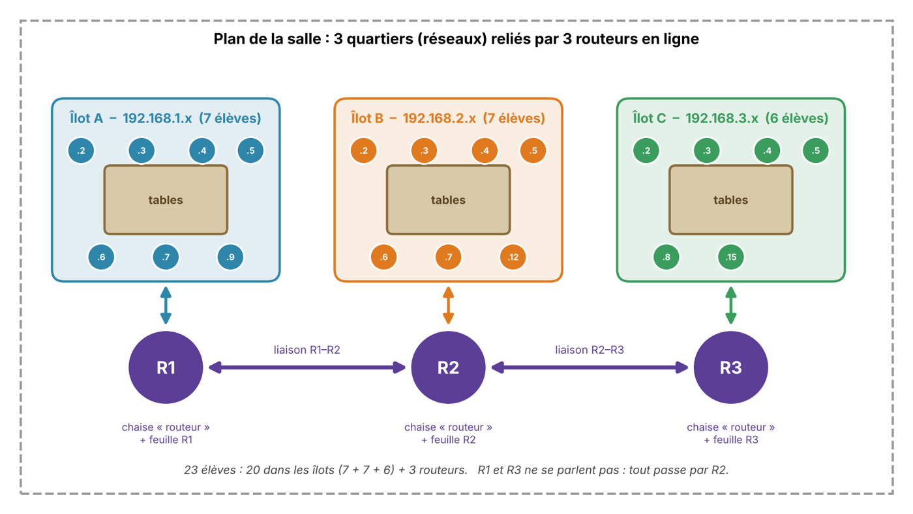
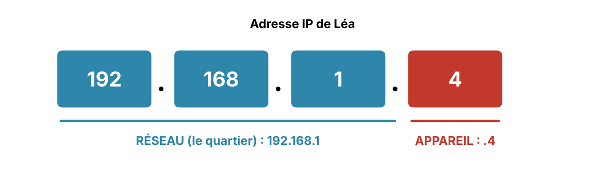
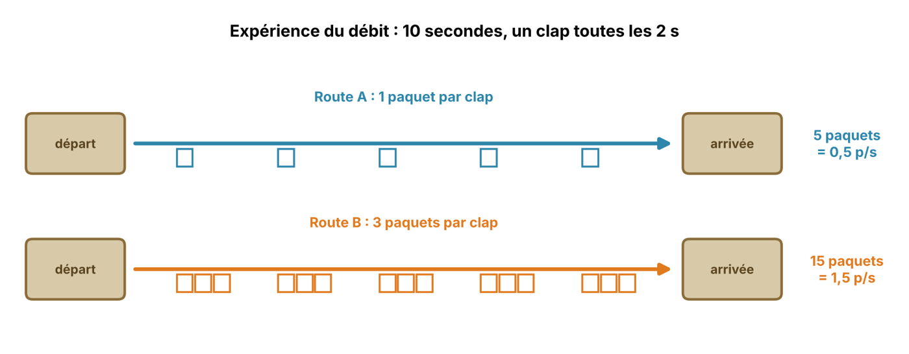

Les chemins de l'information — partie 2 : le réseau postal de la classe
Adresse IP · table de routage · débit · activité sans ordinateur pour 23 élèves · 55 min
Ce que je travaille dans cette activité
Objectif
Comprendre avec des analogies et une manipulation réelle comment une information est identifiée, orientée et transmise dans un réseau.
SFC17
Identifier et représenter la circulation d'une information dans le réseau Internet.
SFC18
Justifier la nécessité d'un protocole de routage pour faire communiquer plusieurs réseaux.
SFC1p
Le rôle et la structure d'une adresse IP, des tables de routage.
SFC1q
Le débit et les ordres de grandeur associés.
N1 — Je sais associer adresse IP, routeur/table de routage et débit à une analogie simple.
N2 — Je sais expliquer avec mes mots le rôle de chacun.
N3 — Je sais suivre un paquet de réseau en réseau et repérer la liaison qui limite le transfert.
Mission — faire voyager un « colis numérique »
Léa, dans le réseau A, doit envoyer un message à Emma, dans le réseau C. Vous n’avez pas d’ordinateur : la classe devient le réseau.
Question : comment le colis sait-il à qui aller, par où passer et combien de colis peuvent circuler en même temps ?
Dans cette fiche en ligne, Léa, Noah, Youssef, Inès, Emma et Adam sont des personnages fictifs. En classe, ta carte d’adresse porte ton prénom.
🏠
Adresse IPComme une adresse postale : elle permet d’identifier la destination.
📦
PaquetComme une lettre ou un colis : une petite partie des données à transporter.
🏤
RouteurComme un centre de tri : il décide vers quelle prochaine étape envoyer le paquet.
📋
Table de routageComme le panneau du centre de tri : « pour cette destination, envoie par ici ».
🛣️
LiaisonComme une route entre deux centres : elle transporte les paquets.
🚚🚚🚚
DébitComme la capacité d’une route : combien de colis passent pendant un temps donné.
La classe devient un réseau

3 îlots = 3 réseaux. 20 élèves dans les îlots et 3 élèves routeurs. R1 et R3 ne se parlent pas : tout passe par R2.
🪪 Ta carte d’adressePose-la devant toi, bien visible. Elle indique ton réseau (îlot) et ton numéro d’appareil.
🤐 Règle d’orInterdit de dire les prénoms ! Une enveloppe circule seulement grâce aux adresses écrites dessus.
✉️ Les enveloppesChaque paquet porte deux adresses : « De » (la source) et « Pour » (la destination).
Ma place dans le réseau
12′
1 — Adresse IP : « À quelle adresse dois-je livrer ? »
Chaque îlot est un réseau en /24 : les trois premiers nombres indiquent le réseau, le dernier indique l’appareil dans ce réseau.

Îlot A — réseau 1
Léa192.168.1.4
Noah192.168.1.9
Îlot B — réseau 2
Youssef192.168.2.7
Inès192.168.2.12
Îlot C — réseau 3
Emma192.168.3.8
Adam192.168.3.15
Manipulation : le professeur distribue les paquets n°1, 2 et 3. Chacun reste dans son îlot (par exemple de 192.168.1.4 vers 192.168.1.9). Faites passer l’enveloppe au bon camarade sans dire de prénom, en lisant seulement les cartes. Puis demandez-vous : et si l’enveloppe devait aller dans un autre îlot ?
Je vérifie ce que j’ai compris
15′
2 — Table de routage : « Vers quel centre de tri maintenant ? »
Un paquet destiné à un autre réseau passe par les routeurs. Un routeur ne devine pas : il lit seulement le 3e nombre de l’adresse de destination, consulte sa table et choisit le prochain saut.
R1
Destination
Envoyer vers
réseau 1
je livre dans l’îlot A
réseau 2
R2
réseau 3
R2
↔
R2
Destination
Envoyer vers
réseau 1
R1
réseau 2
je livre dans l’îlot B
réseau 3
R3
↔
R3
Destination
Envoyer vers
réseau 1
R2
réseau 2
R2
réseau 3
je livre dans l’îlot C
Manipulation : Léa (192.168.1.4) a le paquet n°4, pour 192.168.3.8. À chaque étape, le routeur qui reçoit l’enveloppe lit la destination à voix haute et montre la ligne de sa table : « réseau 3, je l’envoie à R2 ». Ensuite : paquet n°5 (Emma répond à Léa), puis n°6 (Youssef écrit à Noah).
Je suis le paquet n°4
Léa→→→→Emma
10′
3 — Débit : « Combien de colis peuvent passer ? »
Cette fois, on ne change ni l’adresse ni le chemin. On compare la capacité de deux liaisons pendant 10 secondes.

⏱️ ChronométreurLe routeur R1 lance le chrono et dit « stop » au bout de 10 s.
👏 ClapLe routeur R2 frappe dans ses mains toutes les 2 secondes.
🔢 CompteurLe routeur R3 compte les paquets arrivés sur chaque route.
🚶 PorteursDeux élèves de l’îlot C : à chaque clap, 1 enveloppe sur la route A, 3 enveloppes sur la route B.
Je mesure
Route
Paquets à chaque clap
Paquets arrivés en 10 s
Paquets par seconde
Route A
Route B
Passage au vrai réseau : un paquet est fait de bits. Au lieu de compter des enveloppes par seconde, on compte des bits par seconde : bit/s, kbit/s (mille), Mbit/s (million), Gbit/s (milliard).
8′
4 — Défi final : expliquer tout le voyage
Mission : l’élève qui a la carte 192.168.1.3 envoie 10 paquets à Emma (192.168.3.8). Le professeur pose trois panneaux sur les liaisons :
Le paquet connaît sa destination grâce à son adresse IP. Les routeurs utilisent leur table. Mais une des liaisons laisse passer beaucoup moins de paquets que les autres.
5′
5 — Mon bilan
Complète ces trois phrases sans regarder le haut de la fiche.
Une adresse IP sert à →
Une table de routage sert à →
Le débit, c’est →
Je me situe
bonus
6 — Entraînement
Quatre exercices pour réviser l’adresse IP, la table de routage et le débit. Clique sur un niveau : il s’ouvre directement juste en dessous. Tu peux les refaire autant de fois que tu veux, rien n’est noté et rien n’est envoyé au professeur.
Entre le mot de passe donné par le professeur pour afficher les réponses, les explications et ce qu’il faut retenir.
Mot de passe incorrect.
Espace professeur — documents de la séance
Guide professeur illustré (déroulé, répartition des 23 élèves, corrigé), fiche élève à imprimer et kit de jeu (affiches d’îlot, feuilles routeur, cartes d’adresse, étiquettes des paquets, cartes rôles). Les fichiers sont chiffrés : ils ne s’ouvrent qu’avec le mot de passe du professeur.
Mot de passe incorrect.
Guide professeur7 pages · déroulé minuté, plan de salle, répartition nominative, corrigé
Fiche élève à imprimer4 pages recto-verso · 1 par élève